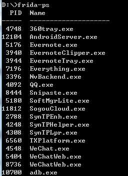

Frida是一款基于Python + JavaScript 的Hook与调试框架，在Android\Linux\Windows等平台均能使用。这里我们以Windows来对Android应用程序进行Hook。Frida的官网地址是：https://www.frida.re。
Windows下Frida的安装
有多种安装方法，这里提供两种，第一种直接使用pip安装，第二种是下载egg文件安装
1.通过pip安装Frida
2.去下载对应平台的egg安装包进行安装
下载地址：https://pypi.python.org/pypi/frida
当前最新版本为9.1.23，下载对应平台和Python版本的安装包，例如我的系统为Win64，Python为2.7，下载的文件为frida-9.1.23-py2.7-win-amd64.egg。下载后安装即可。
由于网络原因，方法1安装时间太久，这里推荐第二种方法。
安装完成后在Dos窗口输入命令：
出现类似以下的界面表示安装成功。

Android下Frida环境的搭建
要求：一部Root过的手机或模拟器，最好采用4.4 ARM系统。PS：我真机采用的是魅族4的5.1系统，有些功能实现不了，只好用模拟器来完成。模拟器的具体配置如下图所示。

首先需用下载最新的frida-server，下载地址为：http://build.frida.re/frida-snapshot/android/arm/bin/frida-server。
下载后将文件上传到手机中，并赋予执行权限。上传到手机使用如下命令：
1
| adb push frida-server /data/local/tmp/
|

将frida-server赋予执行权限，命令如下：
1
2
3
4
| adb shell
su
cd /data/local/tmp/
chmod 777 frida-server
|

运行Frida-Server
1
| ./data/local/tmp/frida-server
|

执行frida-ps -U可以看到手机上的进程

使用frida-ps -R 也可以，但是需要进行转发。执行adb forward tcp:27042 tcp:27042后执行frida-ps -R也可以看到手机上的进程
至此，准备工作已经做好，现在来进行对Android上的程序进行Hook了。
首先以WX的掷骰子和猜拳头为例。这里采用最新版的WX（6.5.7）。
其代码如下所示：
1
2
3
4
5
6
7
8
9
10
11
12
13
14
15
16
17
18
19
20
21
22
23
24
25
26
27
28
29
30
31
32
33
|
import frida, sys
def on_message(message, data):
if message['type'] == 'send':
print("[*] {0}".format(message['payload']))
else:
print(message)
jscode = """
Java.perform(function () {
var be= Java.use("com.tencent.mm.sdk.platformtools.bf");
send("start")
be.da.implementation = function(){
var type = arguments[0];
send(type);//5表示掷骰子，2表示猜拳头
if(type ==2){
return 1;//表示是石头
}else{
return 5;//骰子6点
}
};
send("end")
});
"""
process = frida.get_usb_device().attach('com.tencent.mm')
script = process.create_script(jscode)
script.on('message', on_message)
print('[*] weixin Start...')
script.load()
sys.stdin.read()
|
手机上打开微信后，运行代码。
然后点击掷骰子，可以看到都是6点，猜拳头全部是石头。

下面来用一个例子来介绍一下，如何来通过Hook的方法修改原来的内容，以及当出现相同方法名时，如何对该方法进行Hook。
其Android的Activity代码如下：
1
2
3
4
5
6
7
8
9
10
11
12
13
14
15
16
17
18
19
20
21
22
23
24
25
26
27
28
29
30
31
32
33
34
35
36
37
38
39
40
41
42
43
44
45
46
47
48
49
50
51
52
53
54
55
56
57
58
59
60
61
62
63
64
65
| package com.test.fridatest;
import android.app.Activity;
import android.os.Bundle;
import android.util.Log;
import android.view.View;
import android.view.View.OnClickListener;
import android.widget.Button;
import android.widget.Toast;
public class MainActivity extends Activity {
private Button myButton1;
private String TAG = "fuping";
@Override
protected void onCreate(Bundle savedInstanceState) {
super.onCreate(savedInstanceState);
setContentView(R.layout.activity_main);
myButton1 = (Button) findViewById(R.id.button1);
myButton1.setOnClickListener( new ButtonClick());
}
class ButtonClick implements OnClickListener {
public void onClick(View v) {
switch (v.getId()) {
case R.id.button1:
int nRet = test(4);
String strRet = nRet + "";
Toast.makeText(MainActivity.this, strRet,Toast.LENGTH_LONG).show();
Log.i(TAG, "test(int):"+ strRet);
strRet = test(4,2)+"";
Log.i(TAG, "test(int,int):"+ strRet);
strRet = test(4,"2")+"";
Log.i(TAG, "test(int,String):"+ strRet);
strRet = change(4,"2")+"";
Log.i(TAG, "change(int,String):"+ strRet);
break;
default:
break;
}
}
}
public int test(int num)
{
int nRet = num*2;
return nRet;
}
public int test(int num,int b)
{
int nRet = num*2 + b ;
return nRet;
}
public String test(int num,String b)
{
String nRet = num*2 + b ;
return nRet;
}
public String change(int num,String b)
{
String nRet = num*2 + b ;
return nRet;
}
}
|
首先演示一下对change方法的hook。
hook之前change方法输出的结果为82，预期Hook之后输出的结果应该为164。
在真机上运行结果如下所示：

发现Hook之后返回的是null，而且报错。（经过多次给手机系统升级或降级，都无法成功，最后之后在模拟器上测试了）

在模拟器上进行Hook后，出现了预期的结果。
在对test方法进行hook时，由于有多个test方法，所以在进行Hook时，需要指定是哪个方法。
例如对String test(int num,String b)进行hook时，可以使用如下代码
1
2
3
4
5
| var TM = Java.use("com.test.fridatest.MainActivity");
TM.test.overload("int","java.lang.String").implementation = function (a,b) {
send("Called - test(int,String):"+a+"----"+b);
return this.test.overload("int","java.lang.String").call(this,8,"3");
};
|
附上对test和change同时hook 的结果：

就个人而言，针对Frida和Xposed相比，Frida操作更简单，而且不需要重启手机。但相关资料较少，还是需要慢慢学习。
参考资料
- https://www.frida.re/docs/examples/android/
- https://www.codemetrix.net/hacking-android-apps-with-frida-1/
- http://www.cnblogs.com/konf/p/5998785.html